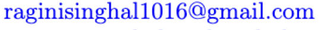

Welcome to my webpage!
Hi, I'm Ragini Singhal, a differential geometer whose primary research interests are manifolds with special geometric structures, gauge theory and Lie groups. I am currently a visitng researcher at Humboldt-Universität zu Berlin with Prof Thomas Walpuski . From July 2023 I will be joining Université Libre de Bruxelles as a research associate with Prof Joel Fine .
Formerly I was a postdoctoral Research Associate working with Prof Simon Salamon in the Geometry group at King's College London funded by the Simons Collaboration on Special Holonomy in Geometry, Analysis, and Physics.
I obtained my PhD from the University of Waterloo, Canada in 2021 under the supervision of Prof Benoit Charbonneau and Prof Spiro Karigiannis.
Before coming to Waterloo, I completed my Masters at Imperial College London where I worked with Prof André Arroja Neves and Bachelors from the Indian Institute of Technology, Kanpur where my undergraduate thesis was with Prof Aparna Dar.
Here is the most current version of my Curriculum Vitae.
